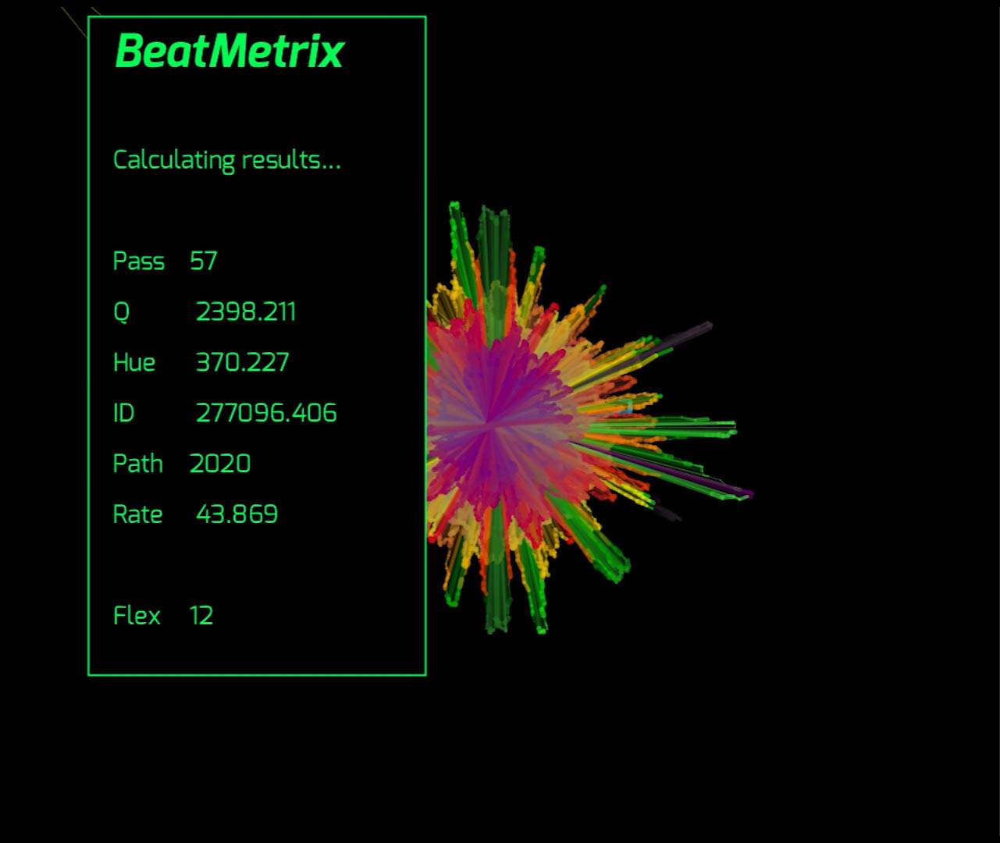
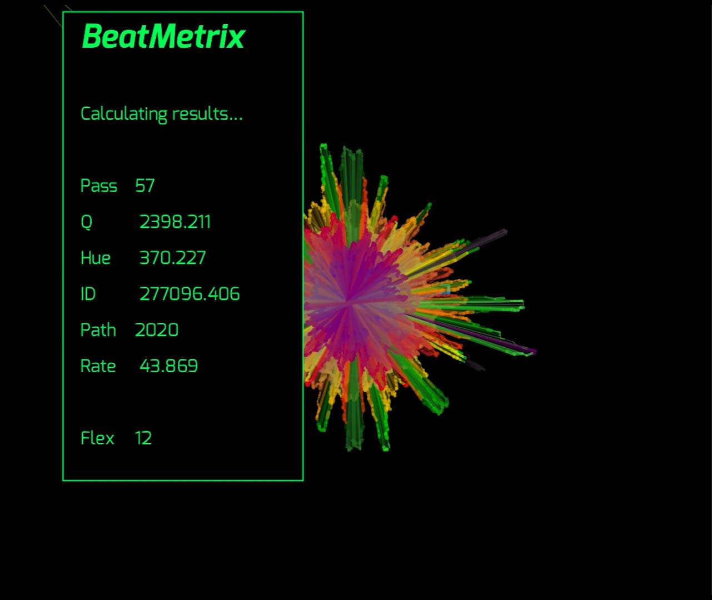
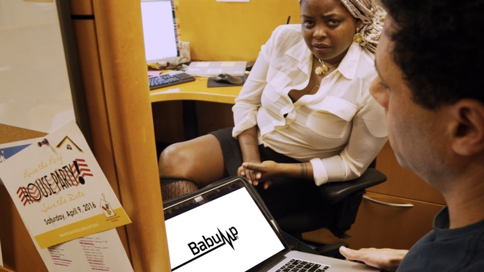
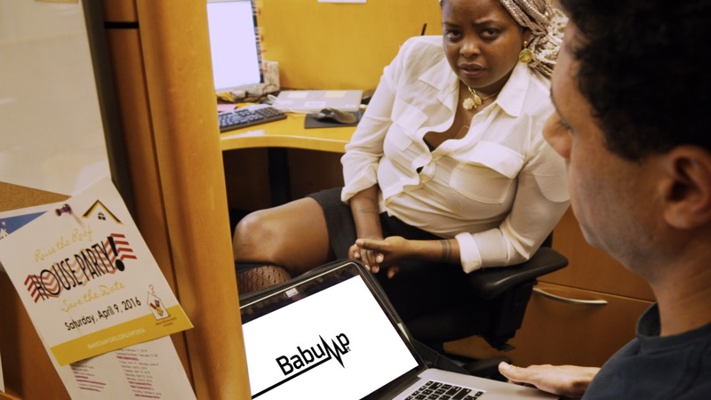
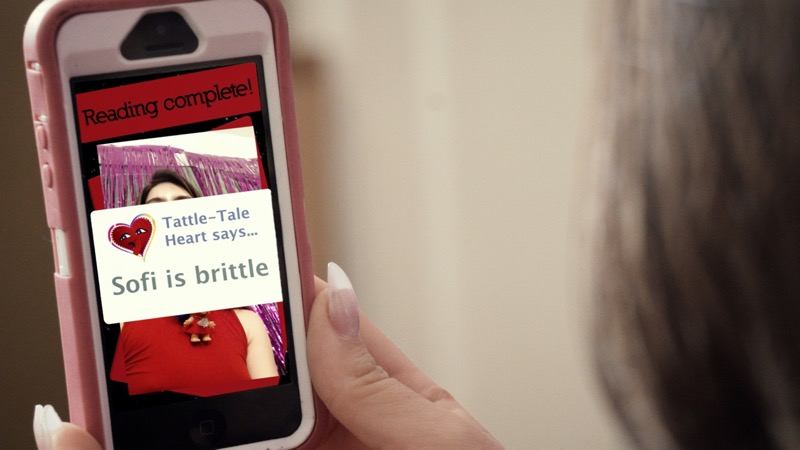
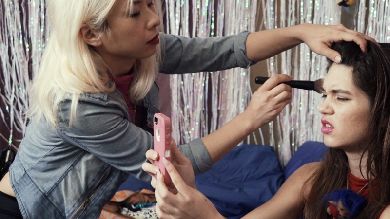
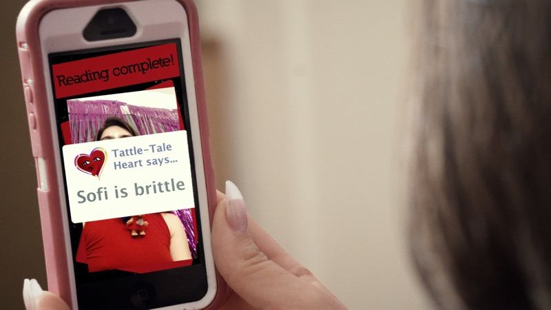
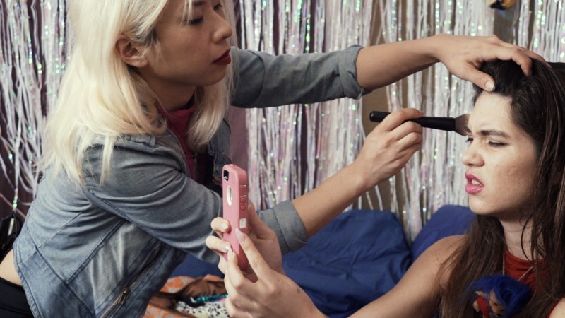
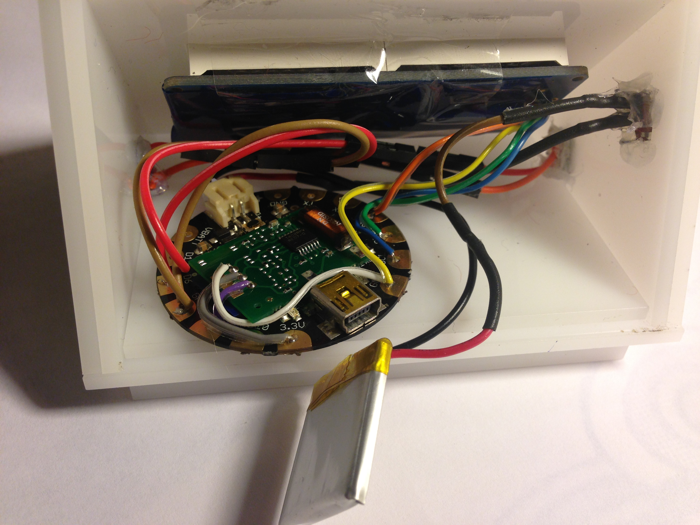
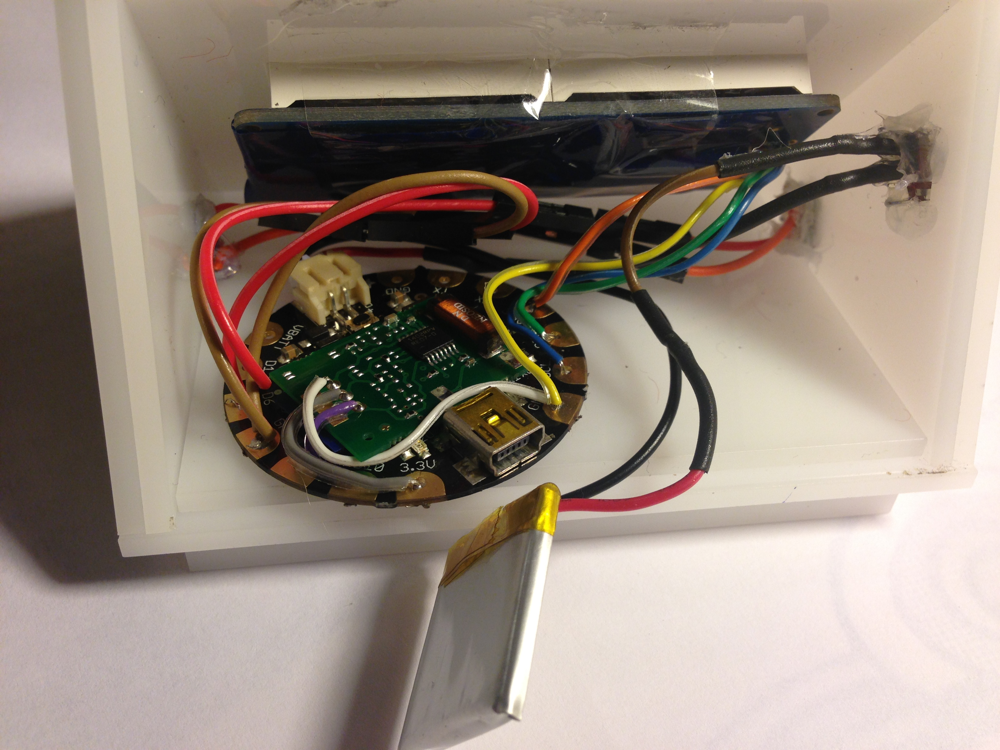

lark vcr
stake in the heart
“Your heart knows things that your mind can’t explain”
Stake in the Heart is a project series exploring data privacy and biosensors. The series examines the digitization of the human heart through critical design (startup companies for heart monitoring devices, both real and fictional), performances, and film. The work shines a bright light on uncomfortable truths about developing technologies by drawing out the ways that heart rate sensors might be problematic, pointing to information privacy and increasingly obligatory use of digital devices and social media platforms.
The project revolves around three heart-monitoring devices: Babump, Tattletale Heart and Meeglo. Babump is a heart monitor disguised as a business card holder, so that employers can monitor employee heart rate during meetings. Tattletale Heart is a necklace, pocket-gamer, and phone app that posts users’ moods directly to social media. And Meeglo, the sincere startup, is a handheld device for heart-focused breathing and meditation.
After building the devices (which really do pick up heart rate), I framed them as tech startups, creating a brand-identity and online presence for each product. From there, the startups became platforms for art performances that infiltrate tech spaces. I showcased the products at several Bay Area startup fairs, presented Babump at the Berkeley Engineering Research Symposium, and received funding and support for Meeglo from the CITRIS Foundry, a technology incubator.
I also positioned the devices as subject and stage for fictional film. In the movie Tattletale Heart (17min, 2016), Tattletale Heart’s phone app becomes a vehicle to explore erosion of privacy under the seduction of social media. The film is narrative in form and - as much as it is a dystopic speculative fiction - it is a campy portrait of beloved queer subculture.
By producing work that showcases technology and its marketing trappings (and taking it a little bit too far), I show how Silicon Valley start-up culture might be leading a sometimes eager public into a dystopic future. However, my take on tech culture is not so one-sided. Whereas some of the startups are speculative, Meeglo is a genuine business endeavor. The project as a whole is a reflexive critique from within tech. It embodies the dualities that define our relationship to developing technology: fear and seduction, hope and doom. Because some products use satire while others are more earnest, the work steers away from the didacticism that often accompanies critical art — its ambiguity grants the audience/consumer the opportunity to perform the critique for themselves.

 

 

 



 
